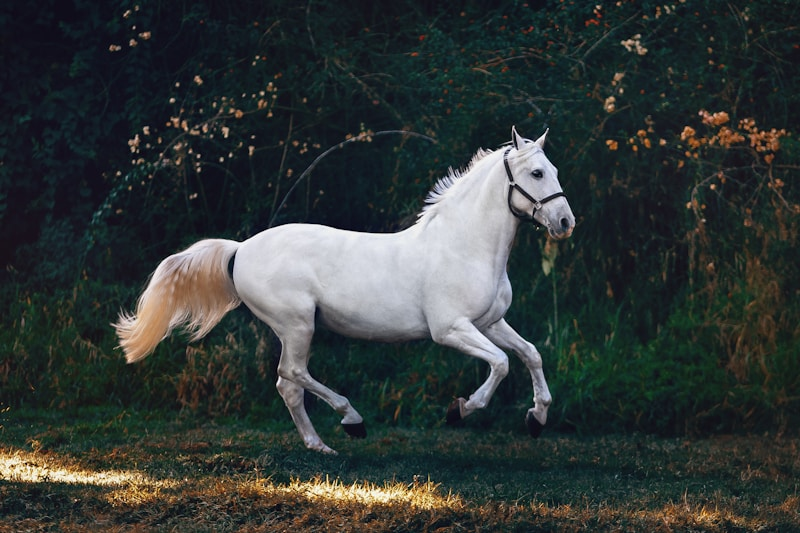

Sinopsis
BoJack Horseman es un caballo que anteriormente fue estrella de una sitcom en los años noventa. En la serie, el personaje se la vive intentando recuperar su fama que aunque si lo reconocen no es la gran estrella de cine que fue. La serie y todos sus personajes representan los distintos tipos de personalidades y traumas o rasgos humanos.
La serie mezcla humor y sátira con temporadas que hablan de
adicción, fama, familia y soledad.
No es solo un dibujo cómico por la cantidad de detalles y el significado que tiene psicológicamente hablando.
Personajes
La animación de los personajes es cómica ya que combina humanos y animales que se comportan como gente de la industria del entretenimiento.
- BoJack — protagonista, egoísta y vulnerable a la vez.
- Diane Nguyen — escritora que busca un propósito más honesto.
- Princess Carolyn — agente que carga con todo y rara vez se detiene.
- Todd Chavez — compañero de piso, caótico y leal.
- Mr. Peanutbutter — labrador famoso al igual que Bojack, optimista hasta el exceso.
Por qué es mi programa favorito
Me gusta porque el trasfondo psicológico es muy profundo si se le analiza. Ademas me gusta su animación, humor e historia.
La atención a los detalles impresionante, cuenta con muchos easter eggs y referencias.
Seis temporadas (2014–2020). Creada por Raphael Bob-Waksberg.